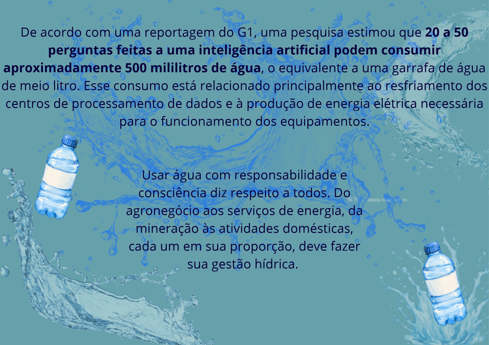

Nossa Missão
Nosso grupo escolheu abordar o consumo de água relacionado à inteligência artificial porque essa tecnologia está cada vez mais presente em nossas vidas, mas seus impactos ambientais ainda são pouco conhecidos por muitas pessoas. Acreditamos que, para utilizar a tecnologia de forma consciente, também precisamos compreender os recursos naturais envolvidos em seu funcionamento.
Com este projeto, queremos despertar a curiosidade e incentivar a reflexão sobre como o desenvolvimento e o uso da inteligência artificial se relacionam com a preservação da água. Nosso objetivo é levar informação às pessoas, mostrando que a inovação tecnológica também precisa caminhar junto com a responsabilidade ambiental.
Esperamos que nosso trabalho contribua para ampliar a conscientização sobre esse tema e incentive tanto os usuários quanto as empresas de tecnologia a refletirem sobre suas escolhas e responsabilidades. Afinal, construir um futuro tecnológico também significa pensar no futuro do planeta.
Conhecer para transformar
Queremos contribuir para que mais pessoas compreendam a relação entre inteligência artificial, consumo de água e preservação dos recursos naturais.
Quanta água existe por trás da IA?
Fazer perguntas à inteligência artificial parece uma ação simples, mas o funcionamento dessas tecnologias envolve centros de processamento de dados que utilizam energia e podem consumir água em seus sistemas de resfriamento.
Para mostrar a dimensão desse recurso, a reportagem do G1 compara estimativas relacionadas ao uso da IA com o consumo diário de água de cidades brasileiras. Confira os dados apresentados na reportagem.
O consumo de água em números
A reportagem do G1 apresenta o consumo diário de água de cidades brasileiras para ajudar a dimensionar os volumes envolvidos nessa discussão.
| Cidade | Estado | Consumo diário de água |
|---|---|---|
| Guarulhos | São Paulo (SP) | 170 milhões de litros |
| Dourados | Mato Grosso do Sul (MS) | 33 milhões de litros |
| João Pessoa | Paraíba (PB) | 116 milhões de litros |
| Juiz de Fora | Minas Gerais (MG) | 93,03 milhões de litros |
| Niterói | Rio de Janeiro (RJ) | 104,29 milhões de litros |
| Sorocaba | São Paulo (SP) | 126,99 milhões de litros |
| Boa Vista | Roraima (RR) | 63,78 milhões de litros |
| Unidade: litros de água consumidos por dia. Valores reproduzidos conforme a reportagem do G1. | ||
G1 — Meio Ambiente / COP30, publicado em 13 de setembro de 2025.
Consultar reportagem original ↗